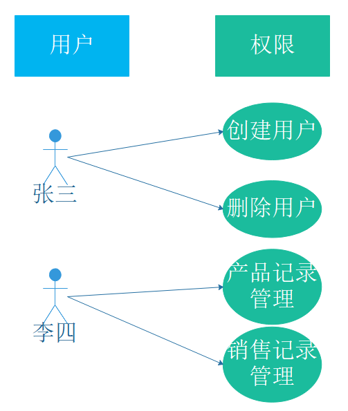
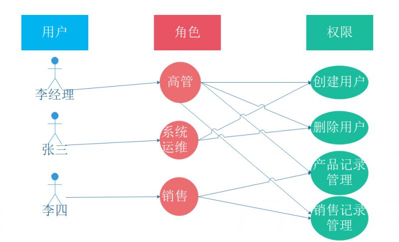
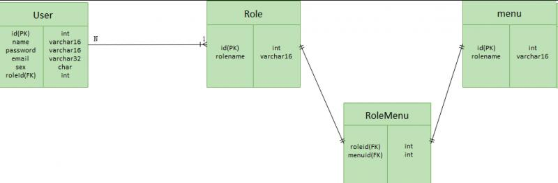
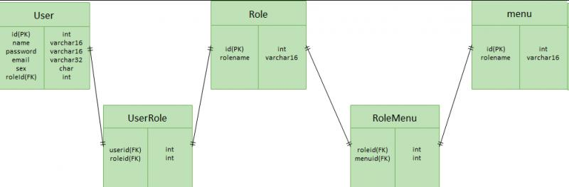
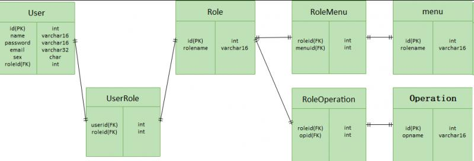

我们开发一个系统，必然面临权限控制的问题，即不同的用户具有不同的访问、操作、数据权限。形成理论的权限控制模型有：自主访问控制（DAC: Discretionary Access Control）、强制访问控制（MAC: Mandatory Access Control）、基于属性的权限验证（ABAC: Attribute-Based Access Control）等。最常被开发者使用也是相对易用、通用的就是RBAC权限模型（Role-Based Access Control），本文就将向大家介绍该权限模型。
RBAC权限模型（Role-Based Access Control）即：基于角色的权限控制。模型中有几个关键的术语：
RBAC权限模型核心授权逻辑如下：

想到权限控制，人们最先想到的一定是用户与权限直接关联的模式，简单地说就是：某个用户具有某些权限。如图：
这种模型能够清晰的表达用户与权限之间的关系，足够简单。但同时也存在问题：
在实际的团体业务中，都可以将用户分类。比如对于薪水管理系统，通常按照级别分类：经理、高级工程师、中级工程师、初级工程师。也就是按照一定的角色分类，通常具有同一角色的用户具有相同的权限。这样改变之后，就可以将针对用户赋权转换为针对角色赋权。

我们可以用下图中的数据库设计模型，描述这样的关系。

但是在实际的应用系统中，一个用户一个角色远远满足不了需求。如果我们希望一个用户既担任销售角色、又暂时担任副总角色。该怎么做呢？为了增加系统设计的适用性，我们通常设计：
我们可以用下图中的数据库设计模型，描述这样的关系。


为了适应这种需求，我们可以把页面资源(菜单)和操作资源(按钮)分表存放，如上图。也可以把二者放到一个表里面存放，用一个字段进行标志区分。
数据权限比较好理解，就是某个用户能够访问和操作哪些数据。
所以为了面对复杂的需求，数据权限的控制通常是由程序员书写个性化的SQL来限制数据范围的，而不是交给权限模型或者Spring Security或shiro来控制。当然也可以从权限模型或者权限框架的角度去解决这个问题，但适用性有限。